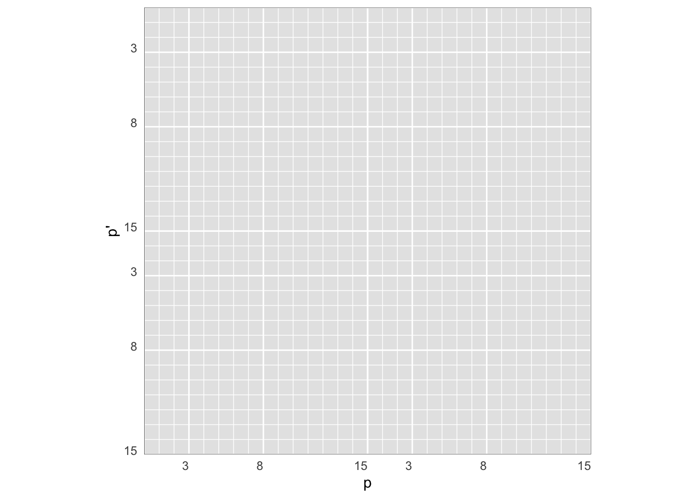
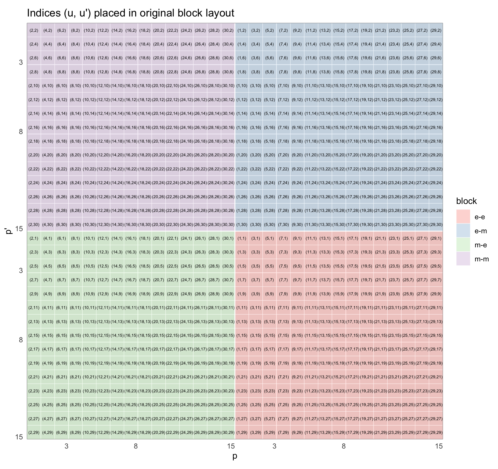

Indexing conventions
We describe in this document two indexing conventions for ordering T-matrix elements.
Magnetic-electric 2x2 block matrix layout
A common notation in the T-matrix literature is to expand fields in vector spherical waves as,
\[ \begin{aligned} \mathbf{E}(\mathbf{r}) = &\sum_{l=1}^{\infty} \sum_{m=-l}^l\left[a_{m l} \mathbf{M}_{m l}\left(k \mathbf{r}\right)+b_{m l} \mathbf{N}_{m l}\left(k\mathbf{r}\right)\right] \\ {} = & \sum_{s=1}^2\sum_{l=1}^{\infty} \sum_{m=-l}^l a^{(s)}_{ m l} \mathbf{\Psi}^{(s)}_{m l}\left(k \mathbf{r}\right) \quad \text{(compact notation)} \end{aligned} \]
- l: multipole degree 1:lmax
- m: multipole order, -l:l
- s: multipole polarisation type, 1 (magnetic) or 2 (electric)
and \(\mathbf{M}\equiv \mathbf{\Psi}^{(1)}, \mathbf{N}\equiv \mathbf{\Psi}^{(2)}\) stand for the “magnetic” and “electric” types, respectively.
Arranging the expansion coefficients in this order naturally leads to the common 2x2 block-matrix displayed below. Explicitly, for a T-matrix with \(l_\text{max}=3\), we can visualise the 900 elements organised as follows:
To keep track of the multiple indices, for each block we can introduce a combined p-index such that,
\[
p(l,m) = l(l+1)+m
\] which here varies as p: 1..15, as each block is of dimension pmax = lmax(lmax+1)+lmax = 3(3+1)+3 = 15.
The whole T-matrix is indexed with a combined q-index such that,
\[ q(s,p) = (s-1)p_{max} + p \] which here gives us, q: 1…30. The total T-matrix dimension (along rows/columns) is thus \(q_{max}=2\times(l_\text{max}(l_\text{max}+1)+l_\text{max})=30\).
In summary, for a given \(l_\text{max}\) the indices are given by:
- \(l=1:l_\text{max}\)
- \(m=-l:l\) for each l
- \(s=1:2\) for each pair of (l,m)
- \(p(l,m) = l(l+1)+m\)
- \(q(s,p) = (s-1)p_{max} + p\)
Given \(q\) and \(l_\text{max}\) we can invert these indices as follows,
- \(p = q - (s-1)q_\text{max}/2\),
giving here, 1, 2, 3, 4, 5, 6, 7, 8, 9, 10, 11, 12, 13, 14, 15, 1, 2, 3, 4, 5, 6, 7, 8, 9, 10, 11, 12, 13, 14, 15 - \(l = \lfloor\sqrt{p}\rfloor\),
giving here 1, 1, 1, 2, 2, 2, 2, 2, 3, 3, 3, 3, 3, 3, 3, 1, 1, 1, 2, 2, 2, 2, 2, 3, 3, 3, 3, 3, 3, 3 - \(m = p - l(l+1)\),
giving here -1, 0, 1, -2, -1, 0, 1, 2, -3, -2, -1, 0, 1, 2, 3, -1, 0, 1, -2, -1, 0, 1, 2, -3, -2, -1, 0, 1, 2, 3
tmat.h5 indexing convention
In the tmat.h5 format inherited from Treams, indices are ordered by polarization, m, l (fastest to slowest). We can convert to this indexing by calculating new indices u, u' such that:
\[u = 2(p-1) + (3-s)\] where \((3-s)\) swaps electric and magnetic ordering (1 is electric in tmat.h5, 2 magnetic, but in the original block-matrix layout the first index is magnetic). Noting this little change, the index \(u\) simply alternates terms from the electric/magnetic blocks. Below is a reference table for the conversions taking place for the example of \(l_\text{max}=3\). The index \(q\) runs from 1 to 30, and the corresponding index \(u\) in tmat.h5 convention has the elements reordered.
| 1 | 2 | 3 | 4 | 5 | 6 | 7 | 8 | 9 | 10 | 11 | 12 | 13 | 14 | 15 | 16 | 17 | 18 | 19 | 20 | 21 | 22 | 23 | 24 | 25 | 26 | 27 | 28 | 29 | 30 | |
|---|---|---|---|---|---|---|---|---|---|---|---|---|---|---|---|---|---|---|---|---|---|---|---|---|---|---|---|---|---|---|
| u | 2 | 4 | 6 | 8 | 10 | 12 | 14 | 16 | 18 | 20 | 22 | 24 | 26 | 28 | 30 | 1 | 3 | 5 | 7 | 9 | 11 | 13 | 15 | 17 | 19 | 21 | 23 | 25 | 27 | 29 |
| polar | m | m | m | m | m | m | m | m | m | m | m | m | m | m | m | e | e | e | e | e | e | e | e | e | e | e | e | e | e | e |
| p | 1 | 2 | 3 | 4 | 5 | 6 | 7 | 8 | 9 | 10 | 11 | 12 | 13 | 14 | 15 | 1 | 2 | 3 | 4 | 5 | 6 | 7 | 8 | 9 | 10 | 11 | 12 | 13 | 14 | 15 |
| l | 1 | 1 | 1 | 2 | 2 | 2 | 2 | 2 | 3 | 3 | 3 | 3 | 3 | 3 | 3 | 1 | 1 | 1 | 2 | 2 | 2 | 2 | 2 | 3 | 3 | 3 | 3 | 3 | 3 | 3 |
| m | -1 | 0 | 1 | -2 | -1 | 0 | 1 | 2 | -3 | -2 | -1 | 0 | 1 | 2 | 3 | -1 | 0 | 1 | -2 | -1 | 0 | 1 | 2 | -3 | -2 | -1 | 0 | 1 | 2 | 3 |
| s | 1 | 1 | 1 | 1 | 1 | 1 | 1 | 1 | 1 | 1 | 1 | 1 | 1 | 1 | 1 | 2 | 2 | 2 | 2 | 2 | 2 | 2 | 2 | 2 | 2 | 2 | 2 | 2 | 2 | 2 |
A visual representation of \((u,u')\) indices for the original T-matrix entries is shown below:
